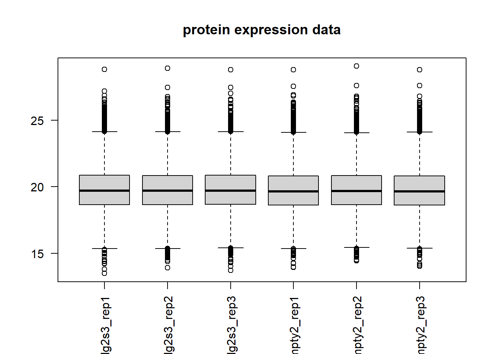
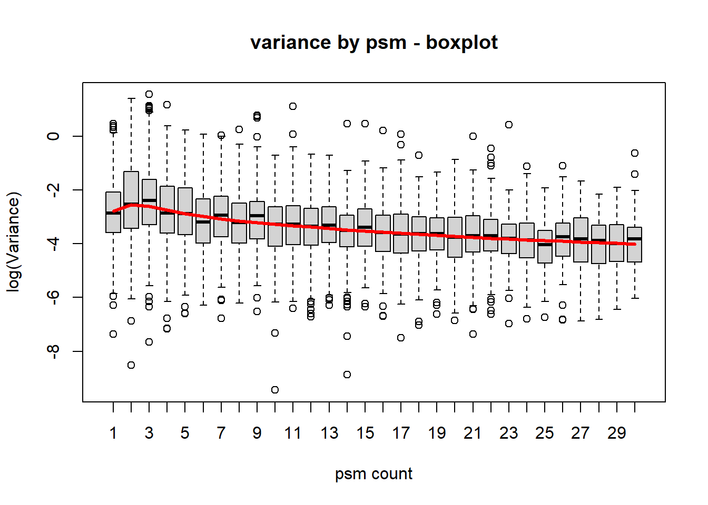
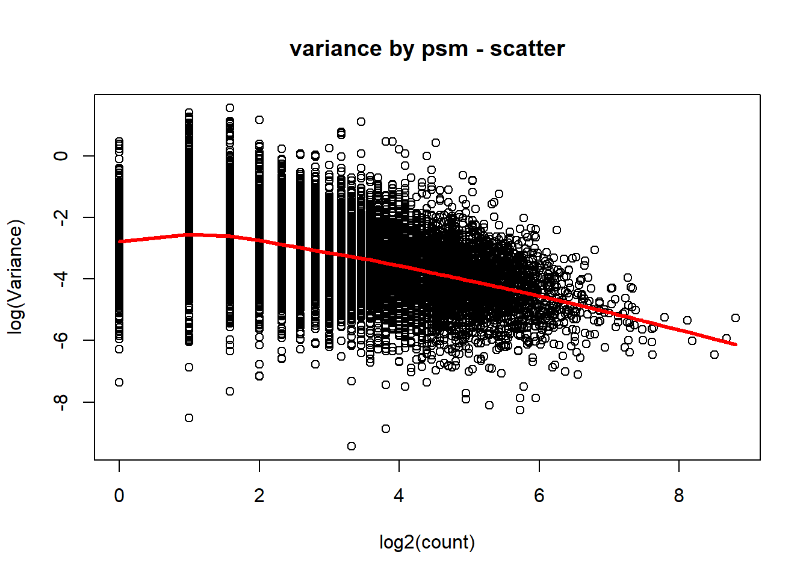

##########################################################################################
library('tidyverse')
library('diann')
library('DEqMS')
library('matrixStats')Proteomic data processing
This document details the analysis of proteomics data from MNNGa cells expressing DLG2s (clone 3 versus empty clone 2). The proteomic data were obtained using a DIA protocol and processed with DiaNN software.
Setting up the environment
These are packages you will need for this notebook. For exact versions used, please refer to the session info at the bottom of this notebook.
I want to set a base directory that we can use as a link to the directory where we will do most of the work. I use two directories here because the Workspace is what is pushed to GitHub and contains scripts and plot files, but the Repository is where more of the big data is stored that does not get pushed.
##########################################################################################
generalDatasets = 'C:/Users/chughes/Documents/bccrc/projectsRepository/generalDatasets'
baseWorkspace = 'C:/Users/chughes/Documents/bccrc/projectsWorkspace/sorensenLab/relatedToDlg2'
baseRepository = 'C:/Users/chughes/Documents/bccrc/projectsRepository/sorensenLab/relatedToDlg2'Preparing the data
Basically all we have to do here is read in the peptide tables using the DiaNN R package, and it will process them using the MaxLFQ algorithm.
##########################################################################################
##read in the diaNN data...you have to use double slashes here for some reason
pepHighRaw = diann_load('D:\\msDataTemp\\proteomics20220808_ellaMnngEf1aDlg2s3\\highMassAllReplicatesNoGrouping\\report.tsv')
pepLowRaw = diann_load('D:\\msDataTemp\\proteomics20220808_ellaMnngEf1aDlg2s3\\lowMassAllReplicatesNoGrouping\\report.tsv')
##low mass processing, LFQ at peptide level
pepLowLfq = diann_maxlfq(pepLowRaw[pepLowRaw$Q.Value <= 0.01 & pepLowRaw$Lib.PG.Q.Value <= 0.01 & pepLowRaw$Proteotypic == 1,],
group.header="Stripped.Sequence",
id.header = "Precursor.Id",
quantity.header = "Precursor.Normalised")
gene.names = pepLowRaw$Genes[match(rownames(pepLowLfq), pepLowRaw$Stripped.Sequence)]
accession.names = pepLowRaw$Protein.Group[match(rownames(pepLowLfq), pepLowRaw$Stripped.Sequence)]
pepLowLfqAnno = data.frame('symbol' = gene.names,
'accession' = accession.names,
pepLowLfq)
sampleNames = sub('.*Ef1a_(.*)_diaLow+\\.raw','\\1',colnames(pepLowLfqAnno))
colnames(pepLowLfqAnno) = c(sampleNames)
pepLowLfqReorder = as.data.frame(pepLowLfqAnno[,c('symbol','accession',
'dlg2s3_rep1','dlg2s3_rep2','dlg2s3_rep3',
'empty2_rep1','empty2_rep2','empty2_rep3')])
pepLowLfqReorder$scanSet = 'lowMass'
pepLowLfqReorder$numPeps = 1
pepLowFinal = pepLowLfqReorder %>%
dplyr::filter(!is.na(symbol)) %>%
as_tibble()
##high mass processing, LFQ at peptide level
pepHighLfq = diann_maxlfq(pepHighRaw[pepHighRaw$Q.Value <= 0.01 & pepHighRaw$Lib.PG.Q.Value <= 0.01 & pepHighRaw$Proteotypic == 1,],
group.header="Stripped.Sequence",
id.header = "Precursor.Id",
quantity.header = "Precursor.Normalised")
gene.names = pepHighRaw$Genes[match(rownames(pepHighLfq), pepHighRaw$Stripped.Sequence)]
accession.names = pepHighRaw$Protein.Group[match(rownames(pepHighLfq), pepHighRaw$Stripped.Sequence)]
pepHighLfqAnno = data.frame('symbol' = gene.names,
'accession' = accession.names,
pepHighLfq)
sampleNames = sub('.*Ef1a_(.*)_diaHigh+\\.raw','\\1',colnames(pepLowLfqAnno))
colnames(pepHighLfqAnno) = c(sampleNames)
pepHighLfqReorder = as.data.frame(pepHighLfqAnno[,c('symbol','accession',
'dlg2s3_rep1','dlg2s3_rep2','dlg2s3_rep3',
'empty2_rep1','empty2_rep2','empty2_rep3')])
pepHighLfqReorder$scanSet = 'highMass'
pepHighLfqReorder$numPeps = 1
pepHighFinal = pepHighLfqReorder %>%
dplyr::filter(!is.na(symbol)) %>%
as_tibble()
##combine and save the data
allPeps = rbind(pepLowFinal, pepHighFinal)
saveRDS(allPeps, paste(baseRepository,'/proteomics20220808_ellaMnngEf1aDlg2s3/dataset_strippedPeptidesMaxLfqDiann.rds',sep=''))Now we have a combined peptide table that we can work with. We can roll these peptide values up into proteins and check a couple of control genes we know should be changing.
##########################################################################################
##read in the peptide data and make a protein set
rm(allPeps)
pepData = readRDS(paste(baseRepository,'/proteomics20220808_ellaMnngEf1aDlg2s3/dataset_strippedPeptidesMaxLfqDiann.rds',sep=''))
pepData$samples123 = rowSums(is.na(pepData[,3:5]))
pepData$samples456 = rowSums(is.na(pepData[,6:8]))
pepData[,3:8] = log2(pepData[,3:8])
pepData = dplyr::filter(pepData, symbol != '') %>%
dplyr::filter(samples123 == 0 | samples456 == 0) %>%
dplyr::group_by(symbol, accession) %>%
dplyr::summarise(across(dlg2s3_rep1:empty2_rep3, median, na.rm = TRUE), numPeps = sum(numPeps, na.rm = TRUE))`summarise()` has grouped output by 'symbol'. You can override using the
`.groups` argument.pepData$meanSamples123 = rowMeans(pepData[,3:5], na.rm = TRUE)
pepData$meanSamples456 = rowMeans(pepData[,6:8], na.rm = TRUE)
pepData$ratio = pepData$meanSamples456 - pepData$meanSamples123
##save these data
saveRDS(pepData, paste(baseRepository, '/proteomics20220808_ellaMnngEf1aDlg2s3/dataset_rawDataProteinLevel_dlg2-empty.rds',sep = ''))
write.table(pepData, paste(baseRepository, '/proteomics20220808_ellaMnngEf1aDlg2s3/dataset_rawDataProteinLevel_dlg2-empty.tsv',sep = ''),
col.names = TRUE, row.names = FALSE, quote = FALSE, sep = '\t')Perform differential expression analysis.
##########################################################################################
##get the expression data and assign the row names with the accession code
exprs = as.data.frame(pepData[,3:8])
rownames(exprs) = pepData$accession
exprs = na.omit(exprs)
##check the centering of the data
boxplot(exprs, las = 2, main = 'protein expression data')
##make the design table
cond = as.factor(c('dlg2','dlg2','dlg2','empty','empty','empty'))
design = model.matrix(~0+cond)
colnames(design) = gsub('cond','',colnames(design))
##make contrasts
contrastsToMake = c('dlg2-empty')
contrast = makeContrasts(contrasts = contrastsToMake, levels = design)
fit1 = lmFit(exprs, design)
fit2 = contrasts.fit(fit1, contrasts = contrast)
fit3 = eBayes(fit2)
##deqms analysis
pepCountData = as.data.frame(pepData[,3:9])
pepCountData = na.omit(pepCountData)
fit3$count = pepCountData$numPeps
fit4 = spectraCounteBayes(fit3)
##visualize the results
VarianceBoxplot(fit4, n = 30, main = 'variance by psm - boxplot', xlab = 'psm count')
VarianceScatterplot(fit4, main = 'variance by psm - scatter')
##extract the results and save it
deqmsResults = outputResult(fit4, coef_col = 1)
geneSymbols = pepData[,1:2]
deqmsOutput = as_tibble(deqmsResults) %>%
dplyr::mutate(accession = rownames(deqmsResults)) %>%
dplyr::left_join(geneSymbols) %>%
dplyr::select(accession, symbol, logFC:sca.adj.pval)Joining, by = "accession"deqmsOutput# A tibble: 9,446 x 13
accession symbol logFC AveExpr t P.Value adj.P.Val B gene count
<chr> <chr> <dbl> <dbl> <dbl> <dbl> <dbl> <dbl> <chr> <dbl>
1 Q13303 KCNAB2 -4.20 18.6 -45.7 9.20e-10 0.00000869 11.2 Q13303 10
2 P32004 L1CAM 4.38 18.7 21.7 1.44e- 7 0.000340 8.15 P32004 36
3 P14210 HGF 3.55 23.8 30.7 1.38e- 8 0.0000653 9.83 P14210 2
4 P23508 MCC 2.94 17.4 20.3 2.25e- 7 0.000354 7.78 P23508 15
5 P46013 MKI67 -0.960 20.5 -9.93 2.61e- 5 0.00173 3.25 P46013 195
6 P52655 GTF2A1 3.21 22.0 26.3 3.94e- 8 0.000124 9.13 P52655 4
7 P12429 ANXA3 1.85 21.4 17.3 6.59e- 7 0.000444 6.85 P12429 27
8 P16144 ITGB4 1.48 19.2 14.1 2.58e- 6 0.000697 5.57 P16144 48
9 Q14315 FLNC 1.48 21.5 12.7 5.29e- 6 0.000921 4.87 Q14315 130
10 O94900 TOX 4.37 18.3 18.7 4.02e- 7 0.000444 7.29 O94900 4
# ... with 9,436 more rows, and 3 more variables: sca.t <dbl>,
# sca.P.Value <dbl>, sca.adj.pval <dbl>saveRDS(deqmsOutput, paste(baseRepository, '/proteomics20220808_ellaMnngEf1aDlg2s3/dataset_deqmsProteinLevel_dlg2-empty.rds',sep = ''))
write.table(deqmsOutput, paste(baseRepository, '/proteomics20220808_ellaMnngEf1aDlg2s3/dataset_deqmsProteinLevel_dlg2-empty.tsv',sep = ''),
col.names = TRUE, row.names = FALSE, quote = FALSE, sep = '\t')We are done here for now. Wrap up below.
Session info
##########################################################################################
sessionInfo()R version 4.1.3 (2022-03-10)
Platform: x86_64-w64-mingw32/x64 (64-bit)
Running under: Windows 10 x64 (build 19042)
Matrix products: default
locale:
[1] LC_COLLATE=English_Canada.1252 LC_CTYPE=English_Canada.1252
[3] LC_MONETARY=English_Canada.1252 LC_NUMERIC=C
[5] LC_TIME=English_Canada.1252
attached base packages:
[1] stats graphics grDevices utils datasets methods base
other attached packages:
[1] DEqMS_1.12.1 limma_3.50.3 matrixStats_0.62.0 diann_1.0.1
[5] forcats_0.5.1 stringr_1.4.0 dplyr_1.0.9 purrr_0.3.4
[9] readr_2.1.2 tidyr_1.2.0 tibble_3.1.7 ggplot2_3.3.6
[13] tidyverse_1.3.1
loaded via a namespace (and not attached):
[1] Rcpp_1.0.8.3 lubridate_1.8.0 lattice_0.20-45
[4] assertthat_0.2.1 digest_0.6.29 utf8_1.2.2
[7] R6_2.5.1 cellranger_1.1.0 backports_1.4.1
[10] reprex_2.0.1 evaluate_0.15 httr_1.4.3
[13] pillar_1.7.0 rlang_1.0.3 readxl_1.4.0
[16] rstudioapi_0.13 data.table_1.14.2 Matrix_1.4-1
[19] rmarkdown_2.14 RcppEigen_0.3.3.9.2 munsell_0.5.0
[22] broom_0.8.0 compiler_4.1.3 modelr_0.1.8
[25] xfun_0.31 pkgconfig_2.0.3 htmltools_0.5.2
[28] tidyselect_1.1.2 fansi_1.0.3 crayon_1.5.1
[31] tzdb_0.3.0 dbplyr_2.2.1 withr_2.5.0
[34] grid_4.1.3 jsonlite_1.8.0 gtable_0.3.0
[37] lifecycle_1.0.1 DBI_1.1.3 magrittr_2.0.3
[40] scales_1.2.0 cli_3.3.0 stringi_1.7.6
[43] fs_1.5.2 xml2_1.3.3 ellipsis_0.3.2
[46] generics_0.1.2 vctrs_0.4.1 tools_4.1.3
[49] glue_1.6.2 hms_1.1.1 fastmap_1.1.0
[52] yaml_2.3.5 colorspace_2.0-3 rvest_1.0.2
[55] knitr_1.39 haven_2.5.0